{{appName}}
Gift from folks at LinkedIn
- Messaging System
- Storage System
- Stream Processing System
Architecture

- Best of two models: queuing and publish-subscribe
- Strength of queuing : allowing to divide up the processing of data over multiple consumer instances to scale the processing
- Weakness of queuing : Not a multi-subscriber. Once one process/consumer reads the data it's gone!
- Strength of pub-sub: Allows to broadcast data to multiple processes
- Weakness of pub-sub: Has no way of scaling processing: Every message goes to every subscriber
Best of both worlds
- Consumer Groups
- Partitions
- The consumer group concept in Kafka helps to acheive this
- As in queuing: consumer group feature allows to divide up processing over a collection of processes : members of the consumer group
- As in pub-sub: Kafka broadcasts messages to multiple consumer groups
- With this, Kafka can scale processing and also supports multi-subscriber
- Supports parallel consumption with the Partitions
Parallel consumption

- Assigning the partitions in the topic to the consumers in the consumer group
- So each partition is consumed by exactly one consumer in the consumer group.
- Number of consumer instances in a consumer group = Number of partitions
Storage System
- Data written to Kafka is written to disk and replicated for fault-tolerance
- Producers to wait on acknowledgement so that a write isn't considered complete until it is fully replicated
- Special purpose distributed filesystem dedicated to:
high-performance low-latency commit log storage replication propagation
Stream Processing
- Takes continual streams of data from input topics
- Performs some processing on this input
- Produces continual streams of data to output topics
- Example: retail application takes in input streams of sales and shipments
and output a stream of reorder and price adjustments computed off this data
- Uses the producer and consumer APIs for input
- Has stateful storage
- Uses the consumer group mechanism for fault tolerance among the stream processor instances
Stream Processing - past and future data

- Enterprise messaging system allows processing future messages that will arrive after you subscribe
- A distributed file system like HDFS allows storing static files for batch processing - Allows storing and processing historical data from the past
- With Kafka by combining storage and low-latency subscriptions, streaming applications can treat both past and future data the same way
Kafka uses Apache ZooKeeper
ZooKeeper is Centralized service for maintaining:
- Configuration information
- Naming
- Providing distributed synchronization and group services
Video: Apache Kafka and the Stream Data Platform - Jay Kreps - team built Kafka
Video: Stanford Seminar - I ♥ Logs: Apache Kafka, Stream Processing, and Real-time Data
Video: ACM: Putting Apache Kafka to Use for Event Streams, Jay Kreps
Setup - Starting ZooKeeper Server
 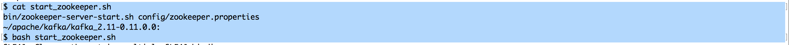
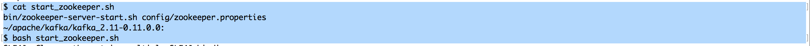
Setup - Kafka Server Config
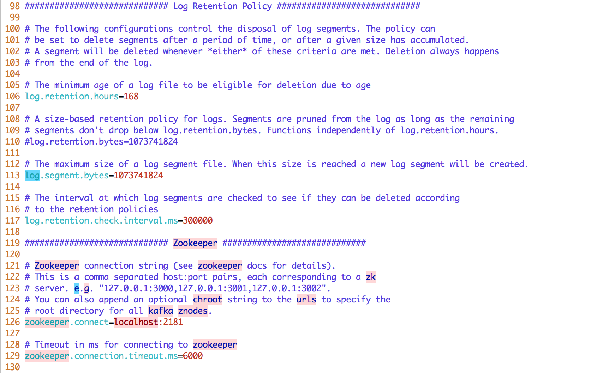Setup - Kafka Server Starting
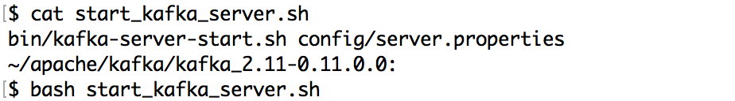Simple Demo - Producer on left and Consumer on right
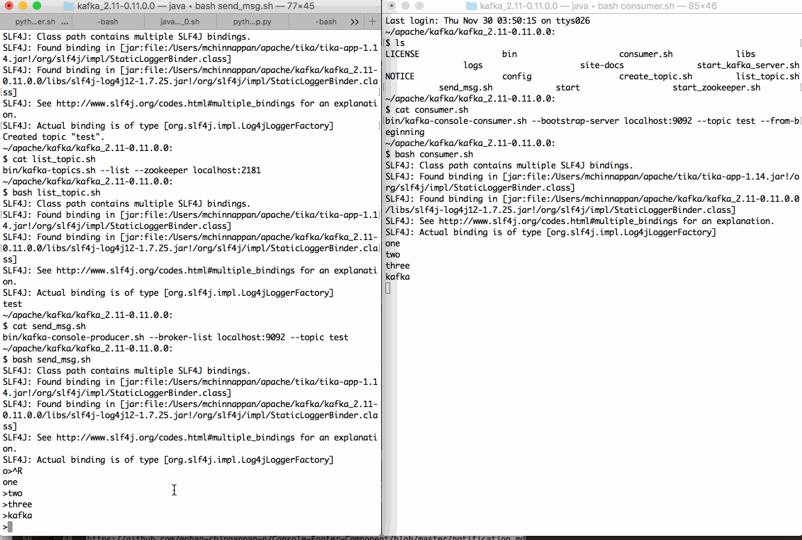Advantages of Message based async integration
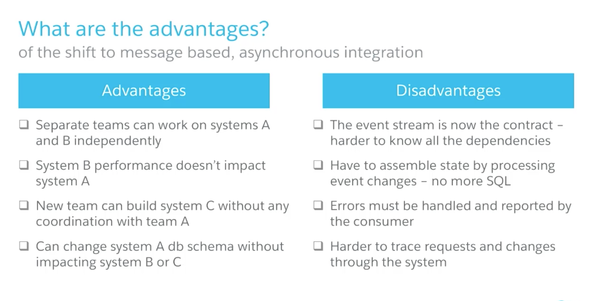Key Ideas - Data/Journal Logs - programmatic access
- Write-ahead logs or commit logs or transaction logs
- Logs are heart of many distributed data systems, data integration and real-time application architectures.
- Append-only, totally-ordered sequence of records ordered by time
- Records what happened and when.
- The ordering of records defines a notion of "time" since entries to the left are defined to be older then entries to the right.
- The log entry number can be thought of as the "timestamp" of the entry.
- database uses a log to write out information about the records they will be modifying, before applying the changes to all the various data structures it maintains.
- Since the log is immediately persisted it is used as the authoritative source in restoring all other persistent structures in the event of a crash.
- The use of logs as a mechanism for data subscription seems to have arisen almost by chance - supporting messaging, data flow, and real-time data processing
- The two problems a log solves: ordering changes and distributing data
Key Ideas - Logs - contd.
- If you feed two deterministic pieces of code the same input log, they will produce the same output.
- You can reduce the problem of making multiple machines all do the same thing to the problem of implementing a distributed consistent log to feed these processes input.
- Time-stamps that index the log now act as the clock for the state of the replicas
Use case: Salesforce as consumer to Kafka topic
- Kafka Producer publishes message to topic test
- Kafka Consumer consumes message from the topic test.
On the receipt of the message it creates a new Account record based on the received message field
Use case: Salesforce as consumer to Kafka topic - Demo
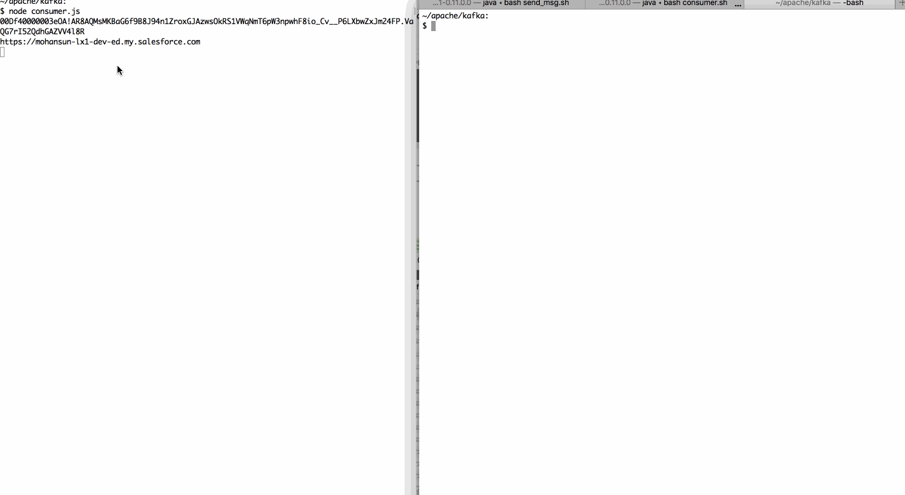How Kafka inspired SFDC Platform Events Architecture
- scalability challenges addressed by:
- asynchronous
- event-driven
- Provide: time-ordered immutable event stream to our customers.
Data Integration - Then
- Data Integration :REST and SOAP APIs
- Business Process Integration: Web Service calls via Apex
- External Objects: Provide data virtualization and federated query
- Event-driven architectural patterns:
- Shift towards decoupling services - async interactions - publish/subscribe model
- subscription durability
Kafka Key points
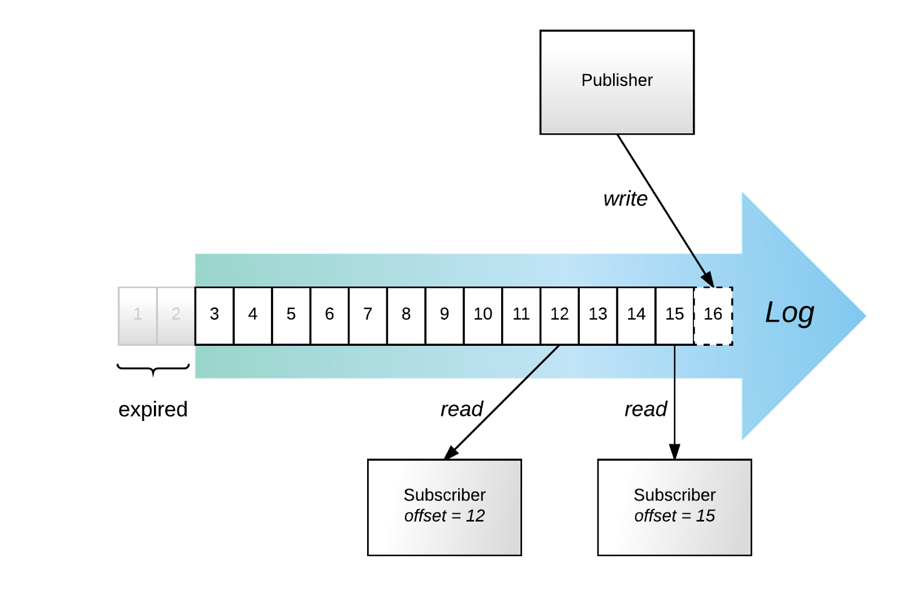
- Events are immutable and are stored on disk in a form of a time-ordered log.
Each message is stored on disk precisely once, regardless of how many subscribers consume it. - Publishers always append at the head of the log. Each newly written event is assigned a new offset — this is the point when its relative order is established
- Subscribers can read events at their own pace. If a subscriber has to reconnect,
it can supply the “last seen” offset to resume exactly where it left off
Tracking of a subscriber position can be the responsibility of the subscriber, so the broker does not suffer from a state explosion as it services more and more subscribers.
Offset-based subscription durability ensures, and even dictates, strict order of events. - To conserve resources, the oldest events can be periodically purged.
- So, a subscriber can miss events if it falls behind for more than the retention period
SFDC - Schema: contents of the message
Platform Events combine: the elegance of a time-ordered event log (Kafka) with the power of Salesforce’s metadata layer
- All participants in the system share a metadata repository
- Allows publishers and subscribers to evolve completely independently
- Schema is published in the metadata repository, subscribers can discover the new message type
- Enables application lifecycle decoupling
- Events can be defined as custom entities (Objects) and their custom definitions can be used as a schema for event serialization and consumption by the subscribers.
- We translate event definitions to Apache Avro so subscribers can consume events in this highly efficient serialization format with libraries in many language environments.
Salesforce Platform Events - Kafka and the Salesforce metadata system
- Events are defined just like custom objects. Subscribers can discover and describe them in the same ways as any other metadata
- Subscribers can tap into the topics on the platform via:
- Event Apex Triggers
- Visual Flow
- For external integrations: topics are exposed via the Salesforce Streaming API.
- Publishers can live within the platform: Lightning, Apex and Visual Flow can send platform events
- External publishers: can use any form of SObject API (REST API) that can save an SObject
- Platform Events are first-class Salesforce Objects
SFDC Operations - Kafka
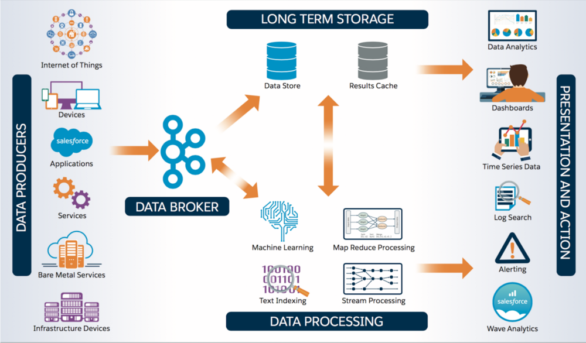- Unified, near-real-time transport for a wide variety of data types: including system metrics and state information, system logs, network flow data, and application logs.
Performance Tips
- Message size:
- Apache Kafka is optimized for small messages (1KB)
- Larger messages ( 10 MB to 100 MB) can decrease throughput and significantly impact operations
- The Kafka producer can compress messages
if the original message is a text-based format (JSON/XML...),compression.codecandcompressed.topiccan be used for setting up the compression: Gzip
- Partitions and memory usage:
- Brokers allocate a buffer the size of
replica.fetch.max.bytesfor each partition they replicate - If
replica.fetch.max.bytesis set to 1 MiB, and you have 1000 partitions, about 1 GiB of RAM is required - The same consideration applies for the consumer
fetch.message.max.bytessetting
- Brokers allocate a buffer the size of
- Garbage Collection:
- Large messages can cause longer garbage collection (GC) pauses as brokers allocate large chunks
- Monitor the GC log and the server log. If long GC pauses cause Kafka to abandon the ZooKeeper session,
you may need to configure longer timeout values forzookeeper.session.timeout.ms
Broker Config
-
message.max.bytes: Maximum message size the broker will accept.
Must be smaller than the consumer fetch.message.max.bytes, or the consumer cannot consume the message. Default: 1MB -
log.segment.bytes: Size of a Kafka data file. Must be larger than any single message. Default: 1GB -
replica.fetch.max.bytes: Maximum message size a broker can replicate. Must be larger thanmessage.max.bytesor a broker can accept messages it cannot replicate, potentially resulting in data loss. Default: 1MB
Consumer Config
-
max.partition.fetch.bytes: The maximum amount of data per-partition the server will return. Default: 10MB -
fetch.max.bytes: The maximum amount of data the server should return for a fetch request. Default: 50MB -
fetch.message.max.bytes: Maximum message size a consumer can read. Must be at least as large asmessage.max.bytesDefault: 1MB - Note: If a single message batch is larger than any of the default values above, the consumer will still be able to consume the batch, but the batch will be sent alone, which can cause performance degradation
Kafka is balanced for both Latency and throughput
- Latency: how long it takes to process one event
- Throughput: how many events arrive within a specific amount of time
- A well tuned Kafka system has just enough brokers to handle topic throughput,
given the latency required to process information as it is received
: Expected: 100,000 events per second.
Tuning Kafka Producers
- Kafka uses an asynchronous publish/subscribe model.
When your producer calls thesend()command, the result returned is afuture - When the batch is ready (fill up buffers on the producer), the producer sends it to the broker.
The Kafka broker waits for an event, receives the result, and then responds that the transaction is complete (OK) batch.size: measures batch size in total bytes instead of the number of messages
- how many bytes of data to collect before sending messages to the Kafka broker
Default: 16384 (set this as high as possible, without exceeding available memory)-
linger.ms: maximum time to buffer data in asynchronous mode
Instead of sending immediately, we can setlinger.msto 5 and send more messages in one batch.
This would reduce the number of requests sent, but would add up to 5 milliseconds of latency to records sent, even if the load on the system does not warrant the delay
Tuning Kafka Brokers
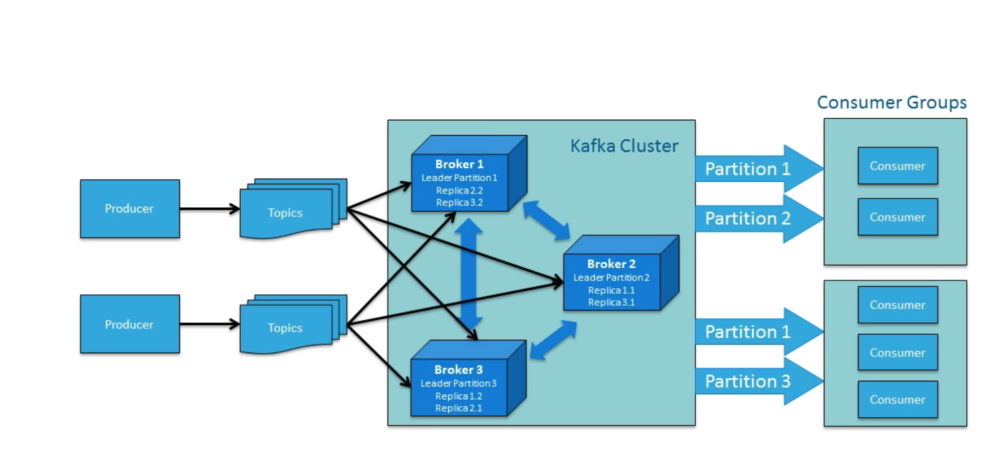- Topics are divided into partitions. Each partition has a leader.
Most partitions are written into leaders with multiple replicas.
When the leaders are not balanced properly, one might be overworked, compared to others - Recommended: one partition per physical storage disk and one consumer per partition
Tuning Kafka Consumers
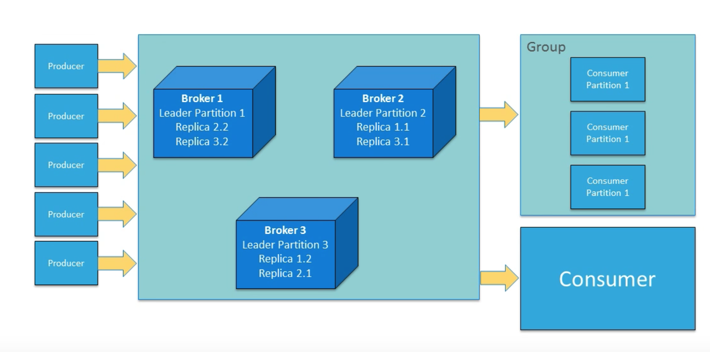- The max. number of consumers for a topic = the number of partitions
- You need enough partitions to handle all the consumers needed to keep up with the producers
- Consumers in the same consumer group split the partitions among them
- Adding more consumers to a group can enhance performance
-
replica.high.watermark.checkpoint.interval.ms: If you have to go back and locate missing data, you have a checkpoint from which to move forward without having to reread prior data.
If you set the checkpoint watermark for every event, you will never lose a message, but it significantly impacts performance. If, instead, you set it to check the offset every hundred messages, you have a margin of safety with much less impact on throughput.
Balancing Apache Kafka Clusters
Tuning Your Apache Kafka Cluster
Quotas: Cloudera Distribution of Apache Kafka
How Does Apache Kafka Work
References
- How We Built Heroku's Real-Time Platform Event Stream
- The Log
- A History and Evaluation of System R
- How Apache Kafka Inspired Our Platform Events Architecture
- Configuring Apache Kafka for Performance and Resource Management
- Benchmarking Apache Kafka: 2 Million Writes Per Second (On Three Cheap Machines)